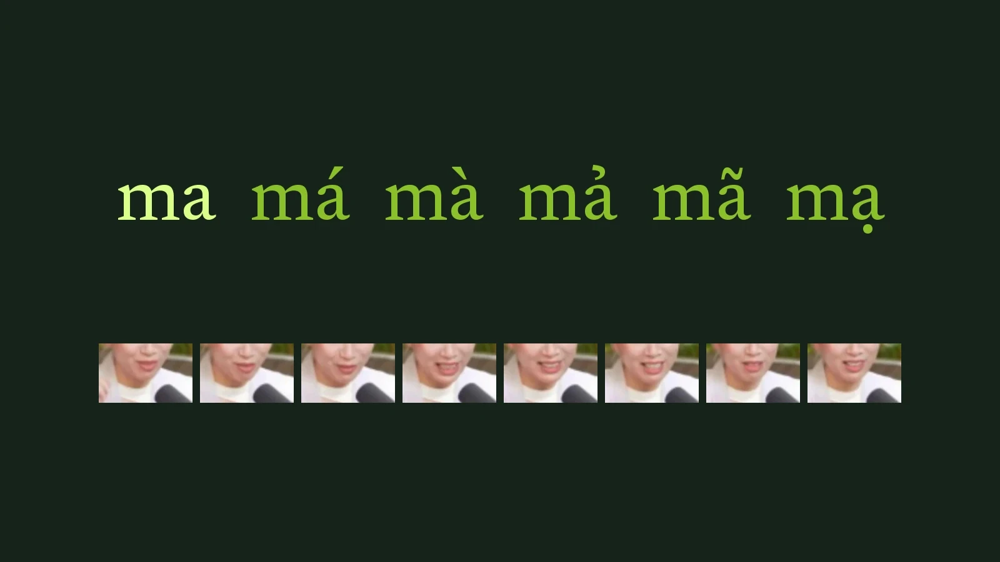
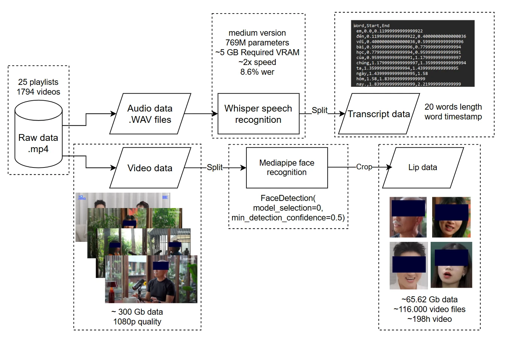
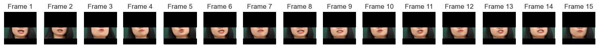

Aaron
AaronNghiên cứu AI tại Đại học FPT
Nhiều bài toán thị giác máy tính đã có lời giải tốt trên dữ liệu tiếng Anh hay hệ thực vật phương Tây, nhưng còn thiếu dữ liệu cho tiếng Việt và cho thiên nhiên Việt Nam. Trong những năm cuối đại học, tôi tham gia các nhóm nghiên cứu của Khoa Trí tuệ Nhân tạo, Đại học FPT theo hai hướng cùng xuất phát từ khoảng trống đó: xây dựng bộ dữ liệu trước, rồi đánh giá các mô hình hiện đại trên đó.

Nhận dạng tiếng nói qua khẩu hình cho tiếng Việt
Xây dựng VLR, bộ dữ liệu đọc khẩu hình tiếng Việt quy mô lớn, và cải tiến quy trình nhận dạng trên một ngôn ngữ có thanh điệu.
Đọc phần A ↓
Phân loại cây thuốc Việt Nam
Mở rộng bộ ảnh cây thuốc VNPlant-200 thành VNPlant-255 và đánh giá nhiều họ mô hình phân loại trong cùng một cấu hình.
Đọc phần B ↓Nhận dạng tiếng nói qua khẩu hình cho tiếng Việt
Câu hỏi nghiên cứuCó thể xây dựng một bộ dữ liệu đọc khẩu hình tiếng Việt quy mô lớn từ nguồn video công khai hay không, và các mô hình hiện đại đạt tới đâu trên một ngôn ngữ có sáu thanh điệu?
Tiếng Việt khó với bài toán đọc khẩu hình: nhiều âm tiết khác thanh nhưng gần như cùng khẩu hình. Bộ dữ liệu VLR được xây từ 1.794 video thuộc 25 danh sách phát YouTube tiếng Việt công khai; tôi tham gia khâu tìm và chọn nguồn video có người nói rõ mặt và nói tự nhiên. Lời thoại được nhận dạng bằng Whisper với mốc thời gian từng từ, khuôn mặt được định vị bằng MediaPipe để cắt vùng môi (Hình 1).

Kết quả là khoảng 116.000 đoạn video với 198 giờ nói, phát hành trên Zenodo. Sáu mô hình đọc khẩu hình chỉ dùng hình ảnh được đánh giá trên VLR; tôi huấn luyện và đánh giá hai trong số đó là VSP-LLM và Auto-AVSR. Với các bước cải tiến của nhóm, tỉ lệ lỗi từ tốt nhất giảm từ 62,18% xuống 29,5%. Mỗi mẫu dữ liệu là một chuỗi khung hình vùng môi gắn với từ được nói (Hình 2).

Phân loại cây thuốc Việt Nam
Câu hỏi nghiên cứuCác họ mô hình phân loại hiện đại hoạt động thế nào trên ảnh cây thuốc Việt Nam chụp ngoài thực địa, với biến thiên tự nhiên về ánh sáng, nền và góc chụp?
Tiếp nối VNPlant-200 (Nguyễn Quốc Trung và Trương Hoàng Vinh, 2021), nhóm mở rộng bộ dữ liệu thành VNPlant-255 với 255 loài, khoảng 34.800 ảnh chụp ngoài thực địa. Phần tôi đảm nhận là thực nghiệm: đưa bảy họ mô hình, từ mạng tích chập, Transformer đến mô hình lai và mô hình gọn nhẹ, qua cùng một cấu hình để so sánh công bằng, và quản lý dữ liệu, trọng số, nhật ký huấn luyện của nhóm trên Kaggle. Bài viết dừng ở dạng bản thảo.
Công bố
- 2024–2026A Large-Scale Vietnamese Lip Reading Dataset and Enhanced Recognition PipelineTiền ấn phẩm · Dữ liệu trên Zenodo